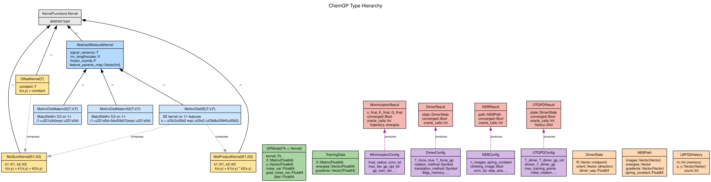
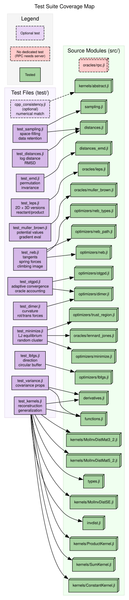

Mapping between ChemGP (Julia), gpr_dimer_matlab (MATLAB), and gpr_optim (C++).


| ChemGP | MATLAB | C++ |
|---|
MolInvDistSE | gpcf_sexp (GPStuff) | CovSEard |
MolInvDistMatern52 | — | CovMatern52 |
MolInvDistMatern32 | — | — |
OffsetKernel | gpcf_constant | CovConst |
MolSumKernel | Additive composition | CovSum |
MolProductKernel | — | CovProd |
compute_inverse_distances | Inline in kernel | InverseDistanceFeatures |
| ChemGP | MATLAB | C++ |
|---|
build_full_covariance | gp_trcov (GPStuff) | GPModel::computeK |
train_model! (Nelder-Mead) | gp_optim (SCG) | GPModel::optimize (SCG) |
predict | potential_gp.m | GPModel::predict |
predict_with_variance | — | GPModel::predictWithVar |
TrainingData | R_all, E_all, G_all | TrainingData |
normalize | Inline | TrainingData::normalize |
| ChemGP | MATLAB | C++ |
|---|
gp_minimize | — | GPMinimize |
gp_dimer | GP_dimer.m | Dimer.cpp |
otgpd | GP_dimer.m (full) | Dimer.cpp (full) |
neb_optimize | NEB.m | — |
gp_neb_aie | GP_NEB_AIE.m | — |
gp_neb_oie | GP_NEB_OIE.m | — |
LBFGSHistory | rot_iter_lbfgs.m | LBFGS.h |
| ChemGP | MATLAB | C++ |
|---|
rotate_dimer_simple! | Direct angle estimate | — |
rotate_dimer_lbfgs! | rot_iter_lbfgs.m | Dimer::rotateLBFGS |
rotate_dimer_cg! | rot_iter_cg.m | Dimer::rotateCG |
rotate_dimer_newton! | rotate_dimer.m | Dimer::rotateNewton |
| ChemGP | MATLAB | C++ |
|---|
| Simple adaptive step | trans_iter_simple.m | — |
translate_dimer_lbfgs! | trans_iter_lbfgs.m | Dimer::translateLBFGS |
| ChemGP | MATLAB | C++ |
|---|
max_1d_log_distance | Inline | max1dlog |
rmsd_distance | – | rmsd |
emd_distance | – | emd |
interatomic_distances | Inline | InverseDistanceFeatures |
| ChemGP | MATLAB | C++ |
|---|
min_distance_to_data | disp_max check | minDistToData |
_trust_min_distance (EMD) | – | minDistToData (EMD) |
_adaptive_trust_threshold | – | adaptiveTrustThreshold |
check_interatomic_ratio | Commented out | checkInteratomicRatio |
remove_rigid_body_modes! | – | project_out_rot_trans |
| ChemGP | MATLAB | C++ |
|---|
_select_optim_subset (FPS) | – | selectOptimSubset |
_extract_subset | – | extractSubset |
HODState / _check_hod! | – | HODMonitor |
_extract_hyperparams | – | extractHyperparams |
farthest_point_sampling | – | farthestPointSampling |
| ChemGP | MATLAB | C++ |
|---|
_eval_images! (sequential) | Sequential loop | – |
_eval_images! (parallel, Threads.@spawn) | – | – |
make_oracle_pool | – | – |
_train_neb_gp (shared helper) | – | – |
The C++ implementation is significantly faster due to:
- Compiled inner loops (vs Julia JIT on first call)
- Analytical SCG gradients for hyperparameter optimization
- Hand-optimized covariance matrix assembly
ChemGP prioritizes clarity and extensibility for pedagogical purposes. See the thesis (arXiv:2510.21368) for detailed benchmarks.